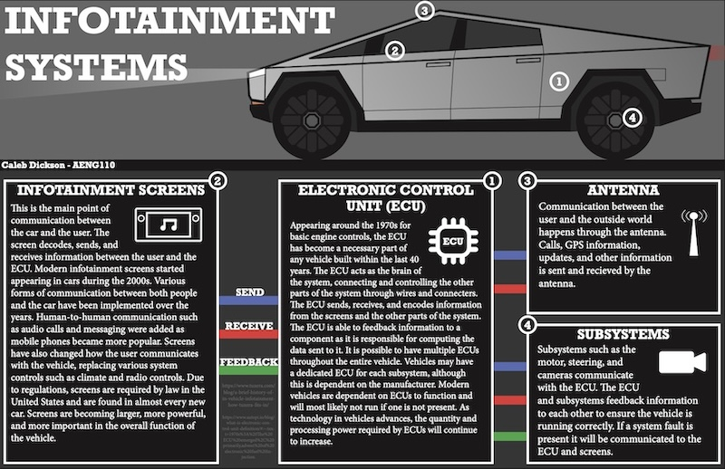

Caleb Dickson e-Portfolio |
|
| Home /// Print Project /// Infographic Project /// Digital Photos |
INFOGRAPHIC PROJECT The goal of this project was to investigate a communication technology using a variety of resources and to determine the origin, operating principle, uses, impacts, and possible future of a selected communication technology and synthesize this information into a visual presentation. this project required us to construct a visual display (infographic) that represents how a selected communication technology fits the communication technology model and enables an understanding of the operating principles of the technology. The class used Adobe InDesign to create their infographics. Adobe InDesign is a publishing and page layout designing software. For this project I described how infotainment systems are used to communicate. The infotainment system is the connection between the infotainment screen, ECU, antenna, and other subsystems in a vehicle. This system allows information to sent, recieved, or feedbacked between each part of the system and the drivers/passengers. |
|  | |
| Home /// Print Project /// Infographic Project /// Digital Photos | |
|
©2023 Caleb Dickson |
|